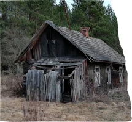
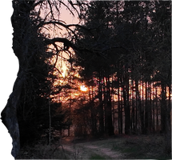
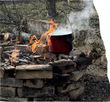
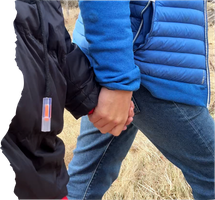
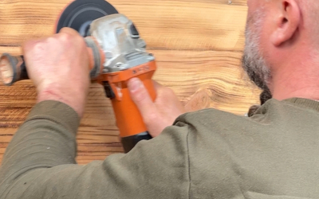
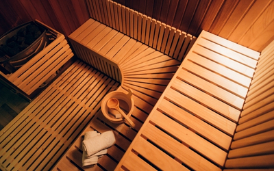
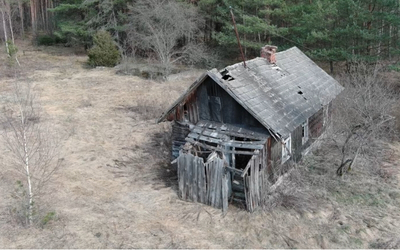
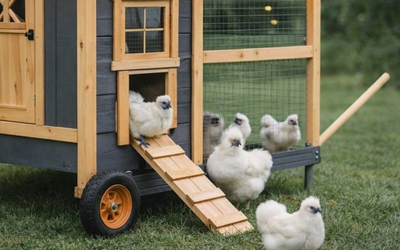
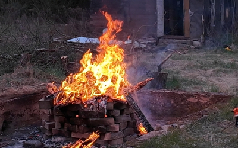

Возрождение хутора
Участие в восстановлении столетнего дома под руководством мастеров. Дом станет центром встреч, разговоров и знакомства с беларусской культурой и традициямиУчастие в восстановлении столетнего дома под руководством мастеров
Создаем экодеревню, где можно перезагрузиться, отдохнуть от шума и присоединиться к перерождению этого места Сделай первый шаг к несбывшейся мечте
В лесу на Подляшье (Польша), в 6 км от границы с Беларусью, мы купили заброшенный хутор со 100-летним домом. Мы не будем сносить его — хотим сохранить характер этого места и сделать старый дом сердцем будущей экодеревни В лесу на Подляшье мы купили заброшенный хутор со 100-летним домом. Мы хотим сохранить характер этого места и сделать старый дом сердцем будущей экодеревни

Участие в восстановлении столетнего дома под руководством мастеров. Дом станет центром встреч, разговоров и знакомства с беларусской культурой и традициямиУчастие в восстановлении столетнего дома под руководством мастеров
Место, где можно отключиться от городского шума и пожить простой жизнью: порубить дрова, натопить баню, собрать яйца в курятнике и подышать лесным воздухомМесто, где можно отключиться от городского шума и пожить простой жизнью


Культура здесь не будет декорацией — она станет частью ежедневной жизни, открытой для беларусов и для всех гостей, которым это откликаетсяКультура здесь не будет декорацией — она станет частью ежедневной жизни
Многие этапы реконструкции усадьбы мы хотим делать вместе с людьми, которым откликается MROJA. Помогая старому дому оживать, человек тоже возвращает себе силыРеконструкцию усадьбы мы хотим делать вместе с теми, кому откликается MROJA

MROJA — не для тех, кто устал, а для тех, кто хочет
снова почувствовать, что живет

Если город, новости, работа
и постоянное напряжение
забрали силы — здесь
можно выдохнуть и
замедлитьсяЕсли новости, работа и напряжение забрали силы — здесь можно выдохнуть и замедлиться

Если вы не готовы все
бросить, но хотите
попробовать жизнь в
деревне без давления и
обязательствЕсли мечтаете пожить в деревне, но не готовы всё бросить — вы попробуете простую жизнь без давления

Если вам не хватает
связи с домом —
здесь вас ждет
Беларусь, в которую
можно приехатьЕсли вам не хватает связи с домом — здесь вас ждет Беларусь, в которую можно приехать

Если вы не готовы к
терапии, но ищете
место, чтобы выдохнуть
и вернуть опоруЕсли вы не готовы к терапии, но ищете место, чтобы выдохнуть и вернуть опору
Многие беларусы после тюрьмы, репрессий, войны и вынужденной
эмиграции живут в состоянии тревоги, усталости и выгорания
Работа с психологами,
психотерапевтами не
принесла желаемого
результата
Нет финансовой возможности,
готовности или доверия
раскрыться перед
специалистом — человек
остается один на один со
своим состоянием
Есть потребность уехать в
природу, включить тело,
работать руками,
почувствовать движение и
ритм
Разгружает голову
Снижает стресс
Наполняет смыслом
Дает ощущение силы
Создают связь
Работы будут идти поэтапно и частично параллельно: сначала —
безопасность, коммуникации и первые условия для людей; дальше — старый
дом, домики, баня, хозяйственная часть и культурное пространство

Расчистить участок, убрать мусор и аварийные элементы, разобрать старые остатки построек, сохранить камни, дерево и всё, что можно использовать повторно

Организовать базовые коммуникации: воду, канализацию, душ, туалеты, электричество и освещение, чтобы на хуторе можно было работать и принимать людей

Поставить первые лесные домики и подготовить палаточную зону для волонтёров, гостей и участников проекта

Обследовать дом, разобрать аварийные части, временно защитить от осадков и понять, какие элементы можно сохранить

Восстановить фундамент, стены, крышу, полы, окна, двери, печь и внутреннее пространство с уважением к характеру дома

Сделать душевые, туалеты, горячую воду и удобную бытовую инфраструктуру для тех, кто приезжает помогать или отдыхать

Построить баню как отдельное место тепла, отдыха и восстановления после работы, прогулок и лесной жизни

Сделать дорожки, освещение, кострище, места отдыха, навигацию, въездную зону и аккуратные хозяйственные участки

Создать теплицу, огород, курятник, место для хранения инструментов и простые деревенские зоны, где можно участвовать в жизни хутора

Открыть дом-клуб для встреч, чая, ужинов, книг, мастерских, беларусского культурного слоя, камерных событий и восстановительных заездов

Расширять домики и палаточную зону, улучшать доступность, делать лесные маршруты, развивать мастерские, хозяйство, культурные программы и социальные заезды

Мы — пара беларусов, вынужденных уехать из своей страны. Сергей был политзаключенным, против Натальи заведены уголовные дела по политическим мотивам.
На последние сбережения мы купили заброшенный хутор в лесу на Подляшье. Старый дом проще было бы снести, но мы хотим сохранить характер этого места. Для нас это символ возвращения к жизни.
Мы мечтаем построить экодеревню — место для тех, кому близки природа, тишина и простая жизнь. Для беларусов это может стать местом силы, а для гостей из других стран — знакомством с нашим гостеприимством и беларуской культурой.
MROJA по-беларусски — мечта, которой суждено сбыться. Мы благодарны Польше и людям здесь за возможность нового начала. Если вам откликается эта история — присоединяйтесь.
Чтобы хутор быстрее ожил, нам нужна поддержка. Даже 1 EUR поможет создать место, куда люди смогут приехать за тишиной, передышкой и человеческим теплом